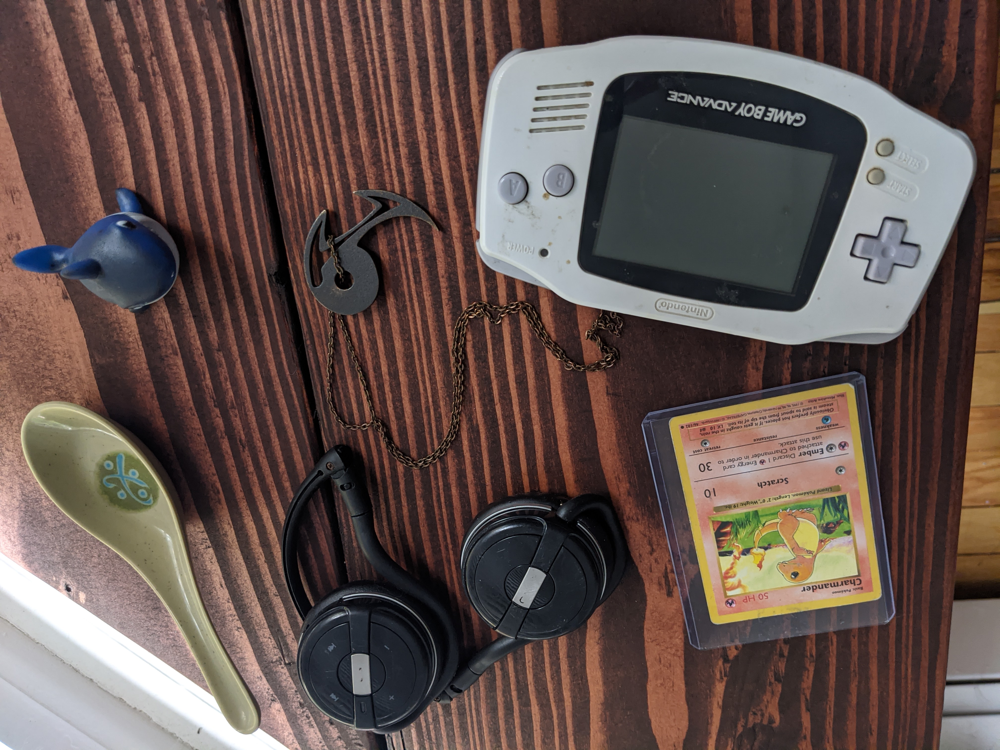
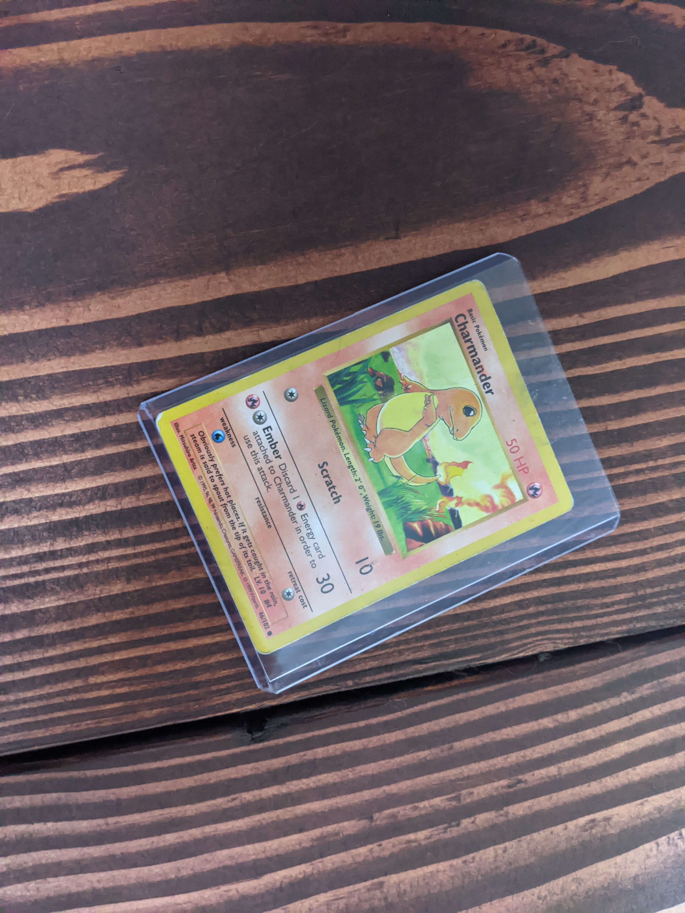
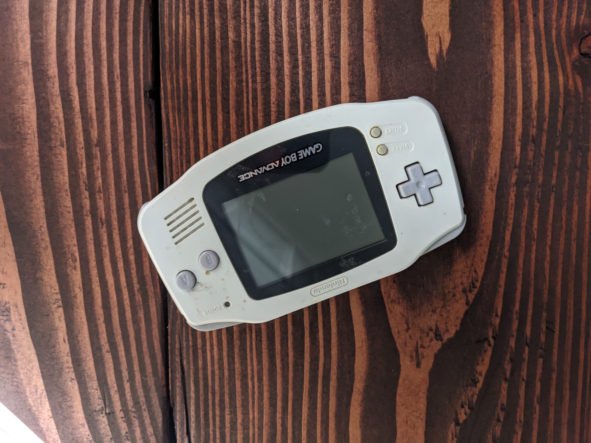
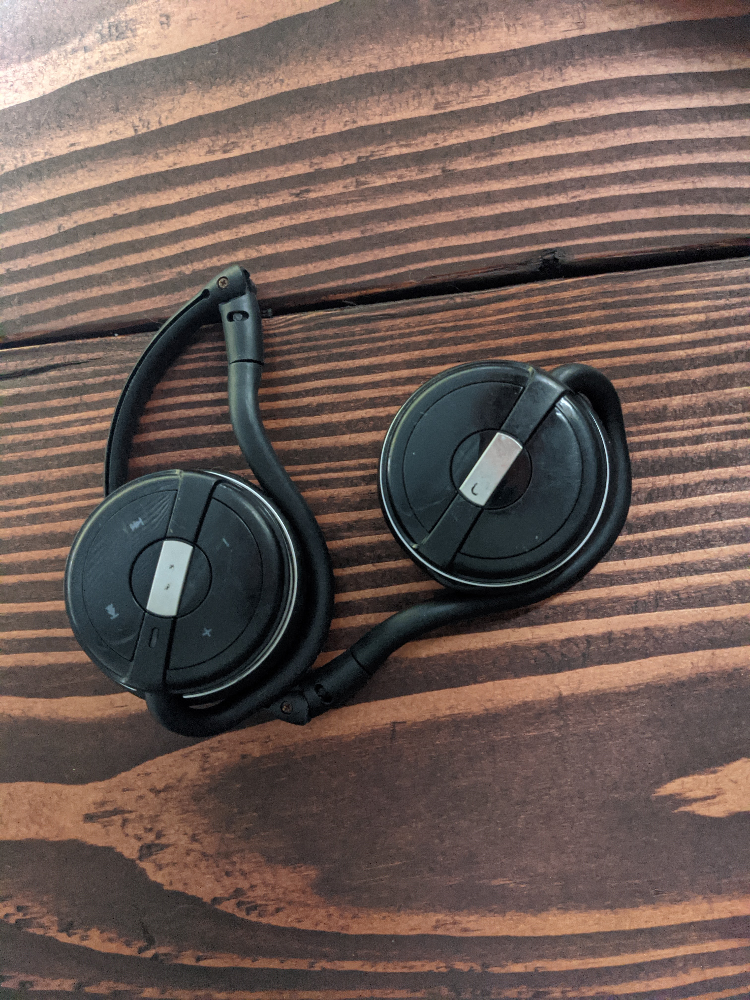
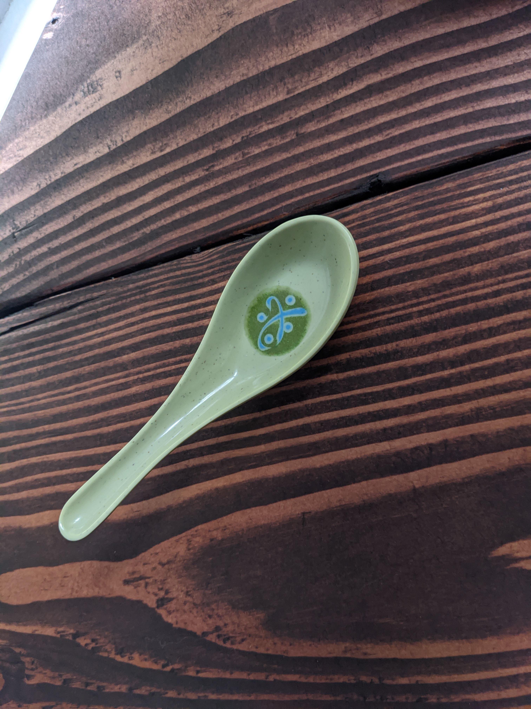
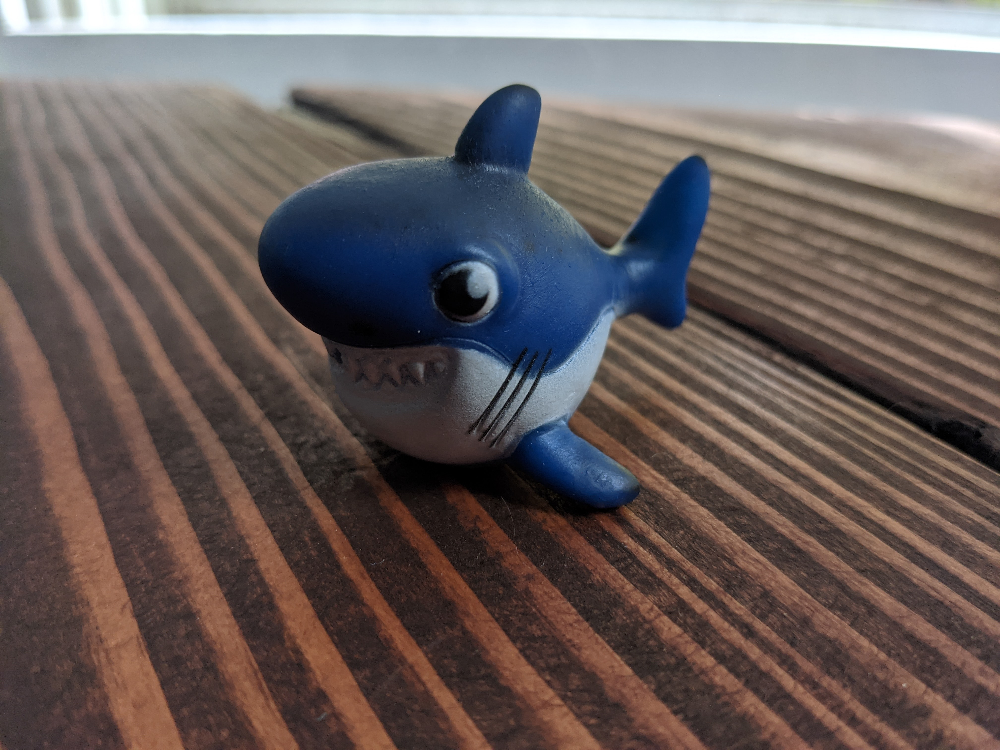
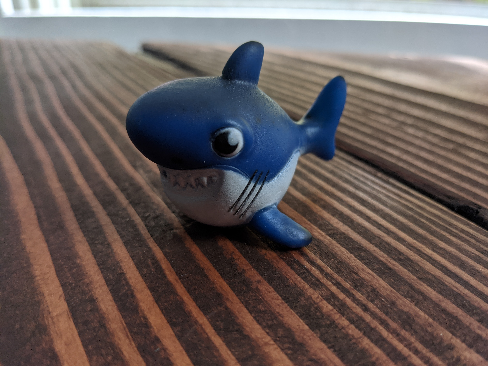

Ideation & Prototyping Week 7
Time Capsule #1 My Stories
 Each of these items represent a significant part of me as well as a time of my life. After selecting each item, I just freely typed about them and that part of me.  I’m not the type of person who is super passionate about any specific thing. I've been too nerdy things such as Comic-Con or the occasional anime convention. When I see people collecting merchandise, dressing up as their fantasy characters, or going to meetups just to talk about their fandoms I don’t quite get it. But there was a time when I was very passionate about one thing. I think I was about seven years old when I first learned about and started watching a show called Pokemon. When this show came around back in the ’90s during my childhood, it was a worldwide phenomenon and I was one of those fans caught in the storm. I and all my friends were all in on the craze. We wore all the merchandise, played the games, and collected the cards that we had no idea how to play. I had the hat that the main character of the TV show wore and a dozen or so different graphic T-shirts full of cartoon monsters. One of the funny things the main character did was spin his hat around whenever he got serious about something which was something little me did. I think this show might have had a big impact on my personality growing up. One of the phrases he said was “I want to be the very best like no one ever was.” I think this stuck with me because I always believed that I would be better if not different than everyone else. Maybe that made me work harder like the main character to be better at everything. Drawing the characters from the cartoon series was something I did a lot which might have contributed to the first steps for me as a professional artist today. I’m not completely sure but I think on my little portable game console “Gameboy” I sunk in more hours on that little thing than any other game I’ve played to date training all my Pokemon, more on that when I talk about that item next. My favorite Pokemon was the little Charmander who eventually evolved into the awesome Charizard. Charmander was bullied for being weak but when he became determined he grew to be the strongest one on the team. Thinking back, it was funny to think that seeing that on TV was such an exciting moment for little me. So this relic of a Pokemon card depicts that character. To me, it represents the will to grow stronger as well as a fond chunk of my childhood.  It was ten years old when I decided that if I had to work for the rest of my life someday, I wanted to do something involved with video games. I still remember the first time I played a video game, I think I was about 4 or 5 when my dad unpacked an old game console he had in the closet. It was a Super Nintendo Entertainment System with a singular game, Super Mario World. I still remember the little TV we plugged the light gray and purple console into the bedroom. I would spend so many hours mashing the buttons, trying to beat the levels no matter how many times I died trying, the farthest I ever got was world 4 out of 8. Years later in middle school, after the game got remade as a portable for the GameBoy Advanced, I was able to complete the entire thing in about a week during a few sessions. Apart from me felt disenchanted by how something so hard for me as a little kid was easily overcome by me as a teenager but another part of me felt pretty accomplished by how much more powerful I had become. I always have had a feeling of productivity when playing video games rather than just passively watching TV like most people of my generation. Completing games leads to feeling like you accomplished something or got better at something to me. I’ve had a lot of games growing up after that old Super Nintendo, an original Sony Playstation, Nintendo GameCube, Playstation 3, Xbox 360, Playstation 4, Nintendo Switch, and even a few gaming desktops I’ve built myself. But the game console I think I’ve invested the most time into and with the fondest of memories was my GameBoys. I still remember bringing along my little carrying case with me everywhere I went, where if it were at my uncle’s house, in the supermarket with my mom, a long road trip where I had to wait for the street lamps to light my screen up in the dark car, or just getting excited to play with it right when I got home from school. I had most of my memories on a clear purple GameBoy Color but I eventually got a GameBoy Advanced from my best friend of 19 years now which is the one you see here. He always got the upgraded game consoles so when this one got outdated, he gave it to me and I was able to play the newer more updated games that came out for it. The goal of wanting to make games for a living made me decide to work hard in school so that I could go to a good college and then get hired to work at a game company. This was kind of a lot for a little kid to think about but sometime during high school, I learned about colleges that let you major in game design. More on this when I talk about my 3D career but playing all those games growing up had a huge impact on my life. Playing video games brings me immense joy and I still enjoy playing video games whenever I can to this day and this old GameBoy represents all of that.  I’ve always been a little physically stronger than most people around me. It was 1st grade during lunchtime in the cafeteria, me and one of my friends would be sitting across from each other on the long lunch table on the benches. We would arm wrestle each other and I would always win, others would come to visit our table as a new challenger and I usually beat them too, it was a pretty fun time. I still remember that there were always two guys who were way bigger than me who I could never beat, but like the heroes of the cartoons I watched, I never gave up and kept trying. Well, the reason why I think I won a lot was that I was also kinda big for my age… I used to be a small little kid but sometime around 2nd grade I kinda got chonky, around 100lbs for a 7-year-old, and then peaked at about 180lbs when I was 11. Luckily I stayed at weight until… well forever. Before high school, I was a really heavy kid and struggled with obesity and high cholesterol the whole time. The thing is when you have to deal with something like that so early in life, you either keep getting worse, try to get better and keep failing until you give up, or keep trying and failing and eventually succeed. You start to learn a lot about the topic and stumble through all the pitfalls and become an expert on the topic at a younger age. It was sometime in 7th or 8th grade when we started doing resistance training in gym class. It was a crappy little gym with machines in the school but it was pretty fun for me since I was able to do a lot of weight. One of the challenges to get your name on a board was to do all the weight on the machine bench press. I still remember, it was something like 220lbs, I was never able to get it up but looking back, if I were to do it now, it would be super easy compared to when I did a 300lb barbell bench press in college. I remember the gym teacher at the time telling me after class one day how I had great potential because I had good form. It was the summer of my freshman year of high school when I first set foot in a real, or at least real weight lifting gym in the high school for football. I’ve always been super unathletic and completely terrible at sports but I always wanted to do something. I decided that since I can’t catch or throw balls, I could at least hit people in front of me in football. My parents were against it since they didn’t see the point in risking injury but I was determined. At 180lbs I was the smallest lineman compared to my 300-400lb competition, but one thing I had going for me was that I was really strong and faster too. When you don’t do any winter or spring sports, the coaches made you hit the weight room and that’s what I did. It was the first time I had finally gotten into pretty good shape but it was also when I developed the lifetime habit of resistance training. Well during my junior year of football before any real games started, I tore my ACL on Labor Day during practice and that was when I quit and eventually got my first job at a movie theater. After graduating high school and spending a single year at community college to get some electives out of the way and to save some money I had gained some significant weight putting me at my lifetime maximum of 200lbs, maybe too much popcorn was eaten. Before going away to college, I made it my goal to get into shape. This is when I first started cooking for myself and lifting weights again. I followed some dumb homework out videos called p90x and by the time fall was coming around I made it back down to 170lbs. Having to be self-motivated and going to the gym during college was tough. At first, I hated it, maybe a year of going because I had goals, then I needed it as a part of my routine or things would feel out of place, and finally, I desired it, it was fun to go and crush the weights. I met a lot of people going to the weight room in college and started going with friends and training together and learning so much in the process. This is when I learned about true bodybuilding, strength training, and nutrition, and got to a point where I finally got the elusive six-pack abs. It was never quite the same going to a private gym after college. I wasn’t a stranger to lone wolfing it in the gym but one thing that’s helped me was just tuning out all the nonsense and playing some nice music while I worked out with these cheap wireless headphones. I never understood people who spent a lot on nice bulky headphones just to get sweaty at the gym. These little $20 guys I got off Amazon years ago have served me well and still do once I’m able to go again. It was 14 when I started seriously lifting weights in high school and it was this year when I had spent more than half my life lifting weights. I have a lot of gym equipment that I carry around with me when I go, from a lifting belt to powdered chalk, but one item that’s been there from the start are these headphones.  So this little spoon might seem a little silly but there are a couple of things about it that might change your mind. It wasn’t until going away to college and then moving off campus into a house with some buddies when I started trying to learn how to cook and build up my culinary skills. One of the funny things I found out living with some housemates was that the long cutout in utensil drawers for knives isn’t for chopsticks and most people, at least the ones in the states, aren’t that good at using chopsticks. I bought a bunch of these spoons and chopsticks and eventually got my housemates to use them too, soon they too understood the utility of them over western forks and regular spoons. One of my friends deemed the name of the spoons to “JPS” (my initials + spoon) and even uses it as a measuring unit for some of his recipes. It was at this time when I also learned that most people are pretty awful at cooking just about everything. I’m not sure if it was because my artistic dexterity gave me an edge or because I started cooking bland healthy stuff to get into shape that made me learn how to make the untasty thing tasty but I started getting a feel for cooking good things. Another big part of it was probably because I cooked more than the average college student to save money while keeping my nutrition good at the same time for my training. Watching Gordon Ramsay on TV or the vast array of youtube cooks these days, they’re so many outlets for new ideas and things to try cooking. I got to the point where I started geeking out over pans and knives when I talk with other people who are also into cooking. One of my signature dishes is homemade pizza, I make the sauce from scratch, dough from flour, and even have a cheese blend that I make. It was when I moved to Maryland for a year when I found how good I had it in the NJ/NYC area where the Italians are plentiful and the food is good. I think it was when I started cooking pretty tasty things and having people compliment me on how good it was that also grew this hobby of mine. Being into anime, I also got into the culture and Japanese cuisine and that stuff are super tasty. It’s a lot more subtle than the South-East Asian food I grew up on because of my heritage but for me, I guess it’s the contrast that lured me in. It was always never too much of a focal point for me being Asian American. Most of my cousins here in the states grew up pretty much the same as me but for some reason, they mostly had Asian friends and were attracted to those communities. For me, all my friends growing up were predominantly everything but Asian, to me it didn’t matter too much. I decided later on that I didn’t want someone to like me just because of the way I looked or expect me to act a certain way. Being in such a diverse country, and a mixed area, I often don’t have to think about my race. It’s funny because my best friend for almost 2 decades will legitimately forget too. Once we were at our Phillopeno friend’s family party, he whispered to me “Jon… we’re surrounded by Asian people” I looked at him with a funny expression as he realized that it was just him. One other funny time was when he met someone just like me when he and his wife were on their honeymoon. He was their Hawaiian scuba instructor as well as their cook, he said to his wife “Holy cow he’s like an Asian Jon” as his wife probably gave him a similar look as I did. “What?? I don’t see in color!” he says as his wife explains to him, “No, you just think Jon’s white.” When they got back from the trip and explained the story, we had quite a laugh. I'm quite fortunate and glad to have someone like him in my life. So with this silly little spoon, I have it to represent my time in college, my development as an above-average home cook, and my heritage. So this is a necklace that I modeled in 3D and had sent to be made using 3D printing and metal casting. I didn’t always know that I was going to become a 3D artist, I didn’t even know what 3D modeling existed until my first class in real college. Well as I talked about in my other story, I was always interested in making video games and so I looked for a school that offered game design as a major. That’s what led me to the school, Rochester Institute of Technology, they had a prestigious game design program which I strived to get into. After all the hard work, I got accepted!... just not into that program, I got accepted into my 3rd option, their cousin program, interactive digital media. I did have a 2nd option which they went on to ask for an art portfolio to gain entry. I took two art classes in high school, mainly focusing on physics and calculus but I did always have some natural talent, maybe all those Pokemon drawings I did when I was little. After putting together some drawings and sending them in, I was accepted into 3D Digital Graphics (later renamed 3D Digital Design). I had no idea what this was but it had the words “make video games” in the description. Turned out I was a natural, with a very nice blend of computer literacy from all the years tinkering with my computers and some art skills I thrived.
When I first started in the 3D major I was at absolute zero while some other students had a huge upper hand with experience doing 3D in high school or on their own. I slowly climbed the ladder getting better and better. It was during my second year during winter break when I used the 10 out of 14 days I had off for winter break of the trimester school to spend 8 hours a day reading through a thick textbook that I picked up on software they didn’t teach us called Zbrush. With art programs, there’s a balance between software and skill, the program director at the time was a little too skewed to the one side and had us use an inferior product called Mudbox. Zbrush was an industry standard and I used it to blow everyone out of the water and ascend that ladder to new heights. I even got the chance to do a couple of guest lectures to showcase the software to some of the other students, it was right when I graduated when the industry-standard software started getting taught in that major. Learning that tool was only the start, it landed me opportunities as a character modeler for game design master students, a summer internship, and even a freelance job as a digital sculptor before I even graduated. I went on to learn dozens of other software and just lived off tutorials to supplement my college education. I think this is what made my portfolio and resume so strong, because of this I was able to land my first job as a cold candidate after college.
The ladder climbing never stopped, I had to learn as an intern at my first job from AAA senior game artist, and eventually, I was good enough for them to hire full time and before I knew it I was showing them some of the tools I knew. We did work for the Department of Defense, after the contracts ended and the team disassembled I did get a venture off to work in Maryland at a 3D scanning company. Over there I got the opportunity to do some 3D sculpting and texture painting from the scans of actors and learn about 3D printing as well. We did some pretty big things like do the majority of the actors from Infinity Wars and other big movies. When I got a call from a recruiter to move back to NJ with some pretty good compensation to do DoD stuff again, I took the chance, and here I am today, except I have grad school on top of it now too. But anyway I designed this logo with my initials and the yin-yang symbol in mind to represent my balance. Where if its balance with fitness and intelligence or tech and artist, I try my best to not be too one-sided. I got this necklace made after I graduated from undergrad and before my first real job and still carry it with me for all the other big events in my life as well, from all my travels around Europe to my first date with my significant other.

Bonus item, this little guy has some fun stories to him, he’s nothing too special but thought it would be nice to include. So funny story, I was at a little arcade down by the Jersey shore, Wildwood to be specific a few years ago. In the arcade, I found a game where you try to shoot a quarter just right into this thing. Somehow I found the perfect amount to send the thing flying, winning me a bunch of tickets and having a poor worker walk a bunch of tickets to refill the machine a bunch of times. Well after we bureaucratically got the guy to refill the tickets just to have them spill out everywhere and bring it right back to him to redeem a prize, I got my significant other a little cat beanie baby that reminded her of a cat she used to have. With the leftovers, I got this little plastic shark.
Eddy or Steddy Sharky as I named him, has since then sat on my car’s dashboard staring at me, making sure I drive nice and steadily. Any sudden movements and he’ll tilt over breaking my multi-day streak. Sometimes I imagine what kind of outrageous complaints he would yell at me, maybe one day I’ll make him one of my video game character designs. Being a person who was raised and drives in northern NJ, we tend to be stupidly aggressive, I didn’t realize this until I lived in upstate NY for college and learned how to chill out and not get stressed out about losing a few minutes on the road by not passing everyone. Being a better driver who doesn’t break or turn too hard thanks to StEddy, my passengers often pass out and I get to catch up on my audiobooks. Thanks, StEddy.
So this is a necklace that I modeled in 3D and had sent to be made using 3D printing and metal casting. I didn’t always know that I was going to become a 3D artist, I didn’t even know what 3D modeling existed until my first class in real college. Well as I talked about in my other story, I was always interested in making video games and so I looked for a school that offered game design as a major. That’s what led me to the school, Rochester Institute of Technology, they had a prestigious game design program which I strived to get into. After all the hard work, I got accepted!... just not into that program, I got accepted into my 3rd option, their cousin program, interactive digital media. I did have a 2nd option which they went on to ask for an art portfolio to gain entry. I took two art classes in high school, mainly focusing on physics and calculus but I did always have some natural talent, maybe all those Pokemon drawings I did when I was little. After putting together some drawings and sending them in, I was accepted into 3D Digital Graphics (later renamed 3D Digital Design). I had no idea what this was but it had the words “make video games” in the description. Turned out I was a natural, with a very nice blend of computer literacy from all the years tinkering with my computers and some art skills I thrived.
When I first started in the 3D major I was at absolute zero while some other students had a huge upper hand with experience doing 3D in high school or on their own. I slowly climbed the ladder getting better and better. It was during my second year during winter break when I used the 10 out of 14 days I had off for winter break of the trimester school to spend 8 hours a day reading through a thick textbook that I picked up on software they didn’t teach us called Zbrush. With art programs, there’s a balance between software and skill, the program director at the time was a little too skewed to the one side and had us use an inferior product called Mudbox. Zbrush was an industry standard and I used it to blow everyone out of the water and ascend that ladder to new heights. I even got the chance to do a couple of guest lectures to showcase the software to some of the other students, it was right when I graduated when the industry-standard software started getting taught in that major. Learning that tool was only the start, it landed me opportunities as a character modeler for game design master students, a summer internship, and even a freelance job as a digital sculptor before I even graduated. I went on to learn dozens of other software and just lived off tutorials to supplement my college education. I think this is what made my portfolio and resume so strong, because of this I was able to land my first job as a cold candidate after college.
The ladder climbing never stopped, I had to learn as an intern at my first job from AAA senior game artist, and eventually, I was good enough for them to hire full time and before I knew it I was showing them some of the tools I knew. We did work for the Department of Defense, after the contracts ended and the team disassembled I did get a venture off to work in Maryland at a 3D scanning company. Over there I got the opportunity to do some 3D sculpting and texture painting from the scans of actors and learn about 3D printing as well. We did some pretty big things like do the majority of the actors from Infinity Wars and other big movies. When I got a call from a recruiter to move back to NJ with some pretty good compensation to do DoD stuff again, I took the chance, and here I am today, except I have grad school on top of it now too. But anyway I designed this logo with my initials and the yin-yang symbol in mind to represent my balance. Where if its balance with fitness and intelligence or tech and artist, I try my best to not be too one-sided. I got this necklace made after I graduated from undergrad and before my first real job and still carry it with me for all the other big events in my life as well, from all my travels around Europe to my first date with my significant other.

Bonus item, this little guy has some fun stories to him, he’s nothing too special but thought it would be nice to include. So funny story, I was at a little arcade down by the Jersey shore, Wildwood to be specific a few years ago. In the arcade, I found a game where you try to shoot a quarter just right into this thing. Somehow I found the perfect amount to send the thing flying, winning me a bunch of tickets and having a poor worker walk a bunch of tickets to refill the machine a bunch of times. Well after we bureaucratically got the guy to refill the tickets just to have them spill out everywhere and bring it right back to him to redeem a prize, I got my significant other a little cat beanie baby that reminded her of a cat she used to have. With the leftovers, I got this little plastic shark.
Eddy or Steddy Sharky as I named him, has since then sat on my car’s dashboard staring at me, making sure I drive nice and steadily. Any sudden movements and he’ll tilt over breaking my multi-day streak. Sometimes I imagine what kind of outrageous complaints he would yell at me, maybe one day I’ll make him one of my video game character designs. Being a person who was raised and drives in northern NJ, we tend to be stupidly aggressive, I didn’t realize this until I lived in upstate NY for college and learned how to chill out and not get stressed out about losing a few minutes on the road by not passing everyone. Being a better driver who doesn’t break or turn too hard thanks to StEddy, my passengers often pass out and I get to catch up on my audiobooks. Thanks, StEddy.
Notes
Each of these items represent a significant part of me as well as a time of my life. After selecting each item, I just freely typed about them and that part of me. Wrote a couple notes before starting Pokemon card: my childhood - My enjoyment of cartoons and anime, the principals these shows impressed on my youth, become the very best, enjoyment of drawing these guys Gameboy - my middle school years, gaming, become my desire for a career, made friends playing games Headphones - my time in the gym, lone wolfing and working out, or with friends, nothing special was cheap, spent most my life lifting and grew up overweight Spoon- my time in college, learning to cook, being asian 3d necklace - my logo, been with me for most of my post graduation events, meeting my SO, getting my first great job, represents my passion for technology and the arts Steady sharky - fun time, represents a fond memory of going to the beach with friends and playing arcade games, making sure i drive well especially in NJ Overall it was interesting trying to write about each item and giving them all a little story that reflected a piece of myself.
home
while (!deck.isInOrder()) {
print 'Iteration ' + i;
deck.shuffle();
i++;
}
print 'It took ' + i + ' iterations to sort the deck.';